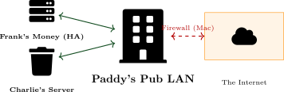
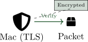
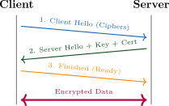
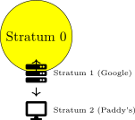
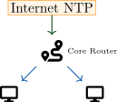
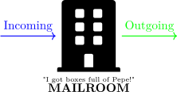
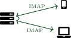
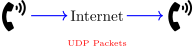
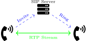
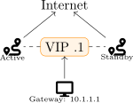

Figure: Diagram supporting the preceding content.
Review: The Gang Recaps Module 6
Previous Concepts
The New Problem
We have connectivity, but...
After completing this module, you will be able to:
This section introduces foundational security and timing services that support trusted communication and coordinated distributed systems.
Section 7.1: Security and Time (Charlie Work)
Figure: Diagram supporting the preceding content.
Core Concepts
Definition
TLS is a cryptographic protocol designed to provide:
Encryption: Privacy (No eavesdropping).
Integrity: Data has not been changed.
Authentication: Verifying identity.
Analogy: Mac’s "Ocular Patdown"
Mac assesses a threat (Authentication), ensures they aren’t carrying weapons (Integrity), and clears them for entry.

Figure: Diagram supporting the preceding content.
Warning
SSL is insecure. Always use TLS 1.2 or 1.3.
TLS 1.3 Handshake: The Process

Figure: Diagram supporting the preceding content.
Technical Steps
Client Hello: "I speak these ciphers."
Server Hello: "Use this one. Here is my Cert."
Key Exchange: Generating session keys.
Finished: Secure tunnel up.
Analogy
The "Secret Handshake" before the gang discusses the scheme.
Digital Certificates (X.509)
Binds an identity (Domain Name) to a Public Key.
Self-Signed Certificates
Signed by itself, not a trusted CA.
Figure: Diagram supporting the preceding content.
Analogy: Bird Law
A Certificate is a contract. You need a Judge (CA) to enforce it. Charlie’s "Bird Law" (Self-Signed) is not recognized in court.
Definition
Protocol used to synchronize clocks.
Stratum Levels
Hierarchy of distance from source.

Figure: Diagram supporting the preceding content.
Analogy: Charlie Work
Charlie ensures all clocks match so the bar opens exactly at 11 AM.
Best Practice Setup
Don’t have every PC query the internet.
Router queries Public NTP (pool.ntp.org).
Switch queries Router.
PC/Server queries Switch/Router.
This creates a single internal time source.

Figure: Diagram supporting the preceding content.
When Milliseconds Aren’t Good Enough
NTP is accurate to milliseconds (ms). PTP (IEEE 1588) is accurate to microseconds (μs) or even nanoseconds.
Use Cases
Analogy: The Nightman Cometh
In a musical, lights and audio must sync perfectly. Being off by 1ms ruins the show.
Figure: Diagram supporting the preceding content.
Case Study: Dennis & The Paddy’s Time Heist
Case Study: "The Gang’s POS System Fails"
Paddy’s POS system is rejecting credit cards with error: "Certificate not yet
valid."
Facts:
"The computer thinks the internet hasn’t been invented yet!" - Charlie
Review Questions
Why does the wrong date break TLS?
What protocol is missing?
How do we fix it permanently?
Case Study Solution: The Paddy’s Time Heist
Solution: "The Gang Learns About Time"
Validity: The system thinks it is 1970. The certificate (from 2024) is "from the future" and thus invalid.
Protocol: NTP (Network Time Protocol).
Fix: Configure the POS to sync with pool.ntp.org.
The Fix
# chrony.conf server 0.pool.ntp.org iburst
Lesson
If time is broken, Security is broken. (Logs, Auth, and Certs all fail).
This section surveys web and file-service protocols, secure transfer options, and storage access patterns used in modern networks.
Section 7.2: Web and File Services (Dennis’s Domain)
Figure: Diagram supporting the preceding content.
What we will cover
HTTP: Hypertext Transfer Protocol
What is it?
The language web browsers use to request webpages.
Analogy: Shouting in the Bar
If Charlie shouts "What is the Wi-Fi password?" across the bar, everyone hears it.
The Conversation (Request/Response)
Browser (GET): GET /menu.html HTTP/1.1 Host: www.paddyspub.com Server (Response): HTTP/1.1 200 OK Content-Type: text/html <html><body><h1>Wolf Cola</h1>...
Figure: Diagram supporting the preceding content.
What is it?
HTTP inside a secure, encrypted tunnel (TLS).
Analogy: The Back Office
Dennis takes the customer into the back office and locks the door to discuss "business."
Figure: Diagram supporting the preceding content.
HSTS
HTTP Strict Transport Security: A rule servers send to browsers saying "Never talk to me on Port 80 again. Only use Port 443."
HTTP Versions: Evolution of Speed
Why do we keep changing it?
The internet got heavier (images, videos). We needed faster ways to load pages.
HTTP/1.1 (1997)
"One at a time."
HTTP/2 (2015)
"Multiplexing."
HTTP/3 (2022)
"QUIC (UDP)."
What is it?
A protocol specifically for uploading/downloading files.
The Problem
FTP sends your Username and Password in plain text! If Frank is sniffing the network, he gets your password immediately.
Active vs. Passive
Figure: Diagram supporting the preceding content.
Secure File Transfer: Don’t use FTP!
SFTP (SSH File Transfer)
Recommended Standard.
FTPS (FTP over SSL)
The Old Way.
Exam Tip
If you see SFTP, think SSH (Port 22). If you see FTPS, think SSL (Certificates).
What is it?
Windows File Sharing. This is what you use when you access a "Shared Folder" on the office network.
Security Warning: SMBv1
SMB Version 1 is extremely dangerous.
Where does the data live?
When the server’s hard drive is full, we buy dedicated storage.
NAS (Network Attached Storage)
"The Shared Box"
SAN (Storage Area Network)
"The Virtual Disk"
NAS Use Case: "The Evidence Locker"
Scenario
Dennis needs a place to store his... "videotapes."
He buys a Synology NAS.
He plugs it into the Paddy’s Switch.
He creates a shared folder: \\NAS\Evidence.
He sets permissions so only he can delete files.
RAID (Redundancy)
Dennis uses RAID 1 (Mirroring) inside the NAS.
Figure: Diagram supporting the preceding content.
Databases: Frank’s "Cooked Books"
SQL (Relational)
Structured Tables. Like an Excel sheet with strict rules.
NoSQL (Non-Relational)
Unstructured Data. Like a box of receipts.
Security
Never expose your database port (e.g., 3306) to the internet. Hackers will brute-force the password in seconds. Keep it behind the firewall!
Case Study: Charlie’s Rat Removal Website
Case Study: "The Gang Gets Hacked"
Charlie launches charliesratremoval.com (Port 80). He collects credit card payments
for his services. It works fine when he tests it locally. However:
Discussion
Why was Frank able to steal the data?
What port/protocol must Charlie enable?
What does Charlie need to install?
Case Study Solution: Charlie’s Rat Removal
Solution: "The Gang Encrypts"
Vulnerability: HTTP (Port 80) sends data in Cleartext.
Fix: Enable HTTPS on Port 443.
Requirement: A TLS Certificate (e.g., Let’s Encrypt).
The Fix
$ sudo apt install certbot $ sudo certbot –apache
Result
Frank opens Wireshark again. He only sees encrypted garbage.
Section 7.3: Email & Voice (The Conspiracy)

Figure: Diagram supporting the preceding content.
Agents
Protocols
SMTP: Simple Mail Transfer Protocol
Sending Mail
SMTP is a Push protocol.
Spam Prevention
Use SPF, DKIM, DMARC to prove identity. These prevent spoofing by using DNS records and cryptographic signatures.
The Conversation
S: 220 paddys.com ESMTP C: HELO google.com S: 250 Hello C: MAIL FROM: <dee@paddys.com> C: RCPT TO: <waitress@coffee.com> C: DATA C: Subject: Bird C: . S: 250 Ok: queued
IMAP (Sync)
"The Cloud" (143/993)
POP3 (Download)
"Local Only" (110/995)

Figure: Diagram supporting the preceding content.
VoIP: Voice Over IP (The Gang Starts a Call Center)
What is VoIP?
Sending voice as UDP packets.
Bandwidth
| Codec | Speed |
| G.711 | 64 Kbps |
| G.729 | 8 Kbps |
Streaming 4K video kills VoIP (Jitter).

Figure: Diagram supporting the preceding content.
SIP (Session Initiation)
"The Setup" (5060/5061).
RTP (Real-time Transport)
"The Stream" (UDP).

Figure: Diagram supporting the preceding content.
VoIP Infrastructure: Power and VLANs
PoE (Power over Ethernet)
Sends power down the cable.
Voice VLANs
Figure: Diagram supporting the preceding content.
Case Study: The Gang’s Call Center
Case Study: "Dee Sounds Like a Robot"
The Gang installs a cheap VoIP system to sell "Wolf Cola."
Discussion Questions
What network phenomenon is causing the stuttering?
Why does Mac’s download affect the phones?
What technology allows voice to skip the line?
Case Study Solution: The Gang’s Call Center
Solution: "The Gang Learns QoS"
Issue: Jitter (Latency variation). Real-time voice cannot tolerate delays.
Cause: Congestion. Mac is filling the bandwidth pipe, forcing voice packets to wait in the buffer.
Fix: Voice and video traffic should be on a separate VLAN. The voice VLAN should implement QoS (Quality of Service) to ensure it has higher priority than best-effort traffic (like game downloads).
QoS Configuration
Figure: Diagram supporting the preceding content.
The final section focuses on resilience planning and redundancy mechanisms that reduce downtime and improve service continuity.
High Availability: "The Show Must Go On"
Concepts
Availability Metrics
| Target | Downtime/Year |
| 99% | 3.65 days |
| 99.9% | 8.76 hours |
| 99.999% | 5 minutes |
Figure: Diagram supporting the preceding content.
How much does Frank lose?
When the server crashes, two clocks start ticking.
RPO (Recovery Point)
"Data Loss Tolerance"
RTO (Recovery Time)
"Downtime Tolerance"
Figure: Diagram supporting the preceding content.
DR Sites: Paddy’s Pub 2 (Electric Boogaloo)
Cold Site
"Empty Warehouse"
Warm Site
"Storage Unit"
Hot Site
"The Franchise"
Figure: Diagram supporting the preceding content.
RAID (Redundant Array of Independent Disks) combines multiple physical drives into one logical unit for redundancy and/or performance.
RAID 0 (Striping)
"Charlie Special"
RAID 1 (Mirroring)
"Dennis System"
RAID 5 (Parity)
"The Gang Share"
Figure: Diagram supporting the preceding content.
FHRP: First Hop Redundancy Protocols
The Problem
If the main router (Gateway) dies, the bar loses internet.
The Solution: Virtual IP
Two routers share ONE IP address.

Figure: Diagram supporting the preceding content.
Case Study: Frank’s "Foolproof" Plan
Case Study: "The Gang Needs 5 Nines"
Frank demands 99.999% availability for his gambling ring.
Current Setup:
Frank’s Budget: $50.
Discussion
Is "Five Nines" realistic?
Identify the SPOF (Single Point of Failure).
Suggest a realistic fix.
Solution: The "Good Enough" Plan
Solution: "Frank Compromises"
Reality Check: 99.999% costs thousands (redundant ISPs, generators).
SPOF: The router, the power, and Charlie.
Realistic Fix:
Figure: Diagram supporting the preceding content.
Key Concepts:
High Availability & Disaster Recovery:
This module covered essential application and infrastructure services: TLS and NTP for security and timing, HTTP/FTP/SMB for web and file services, email protocols and VoIP for communication, and RAID/clustering/disaster recovery strategies for high availability and business continuity. In the next module, we’ll explore network operations, monitoring, and management practices.